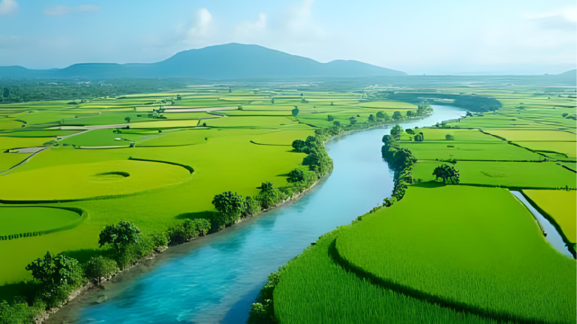
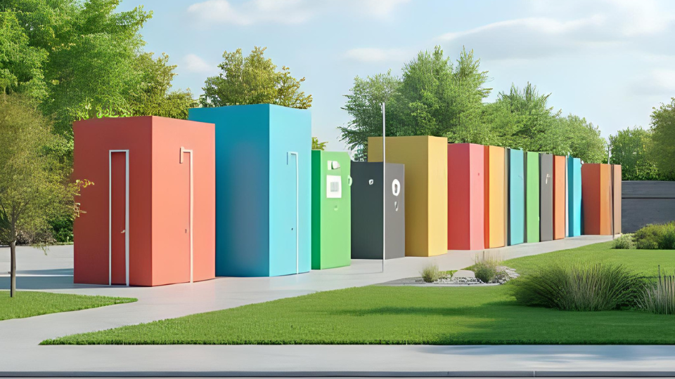

WebGIS Dinas Lingkungan Hidup Kabupaten Sleman
Jelajahi lebih lanjut WebGIS Dinas Lingkungan Hidup Kabupaten Sleman untuk memahami data lingkungan hidup dan berkontribusi pada keberlanjutan Sleman
Peta Lokasi Persampahan
Peta interaktif yang menampilkan tempat-tempat wisata populer, restoran, dan akomodasi di Bali.
Lihat PetaPeta Pelanggan Persampahan
Temukan properti dijual atau disewa di berbagai lokasi dengan filter harga dan tipe properti.
Lihat Peta

Peta Kampus Universitas Gadjah Mada
Peta navigasi untuk mahasiswa dan pengunjung untuk menemukan gedung dan fasilitas kampus.
Lihat PetaPeta Komunitas Lokal Bandung
Direktori visual komunitas dan organisasi non-profit di area Bandung.
Lihat PetaPeta Festival Musik Jakarta
Jadwal dan lokasi panggung, food court, dan fasilitas di festival musik.
Lihat Peta

Peta Jalur Sejarah Kota Lama Semarang
Telusuri titik-titik bersejarah dengan informasi dan gambar pendukung.
Lihat Peta